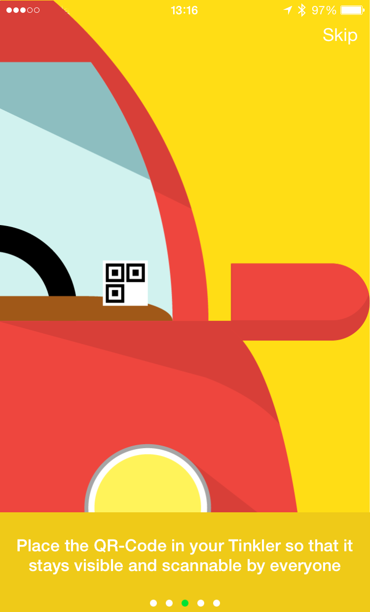
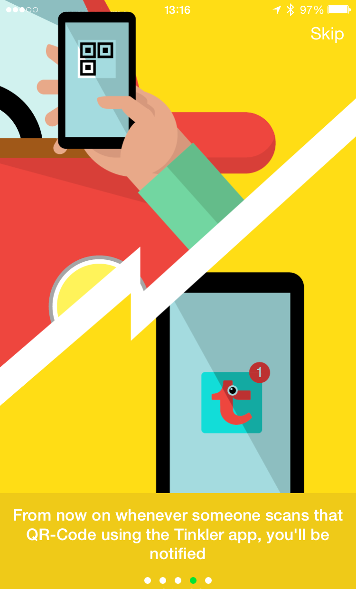
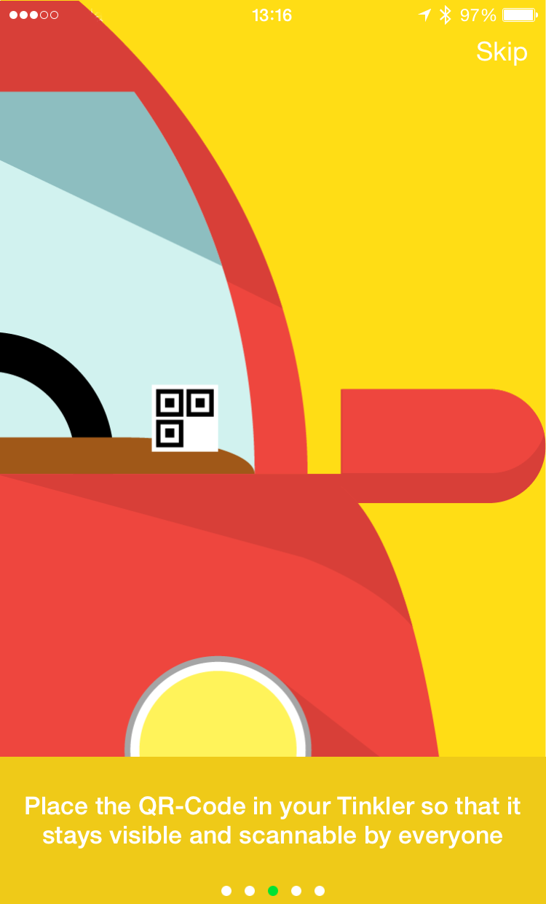
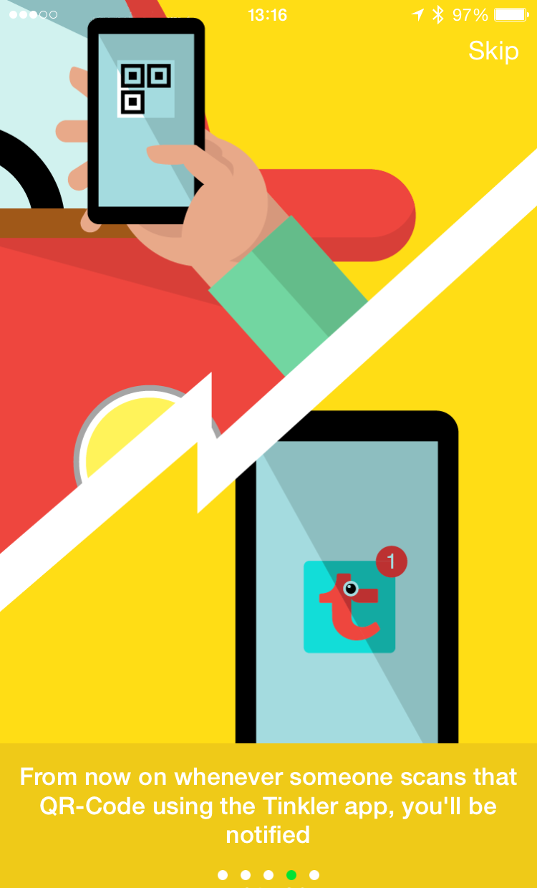

Communicate through everything!
 



Tinkler is a new way for you to let people contact you, without having to share your personal information with the world.
Tinklers are objects tagged with our QR code -- allowing people to connect with you, easily, and with context -- pets, cars, mailboxes, and just about anything else you can think of are great places to start.
"I've got your suitcase"